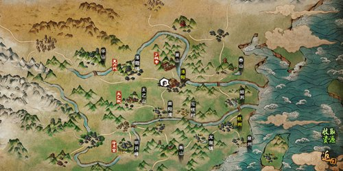
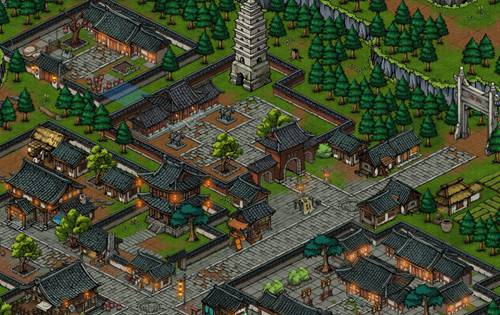
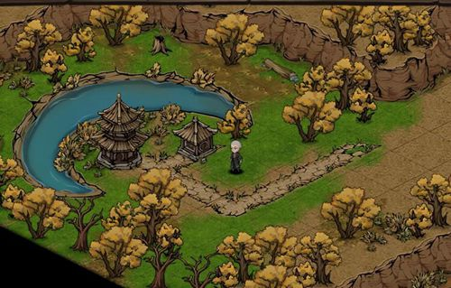
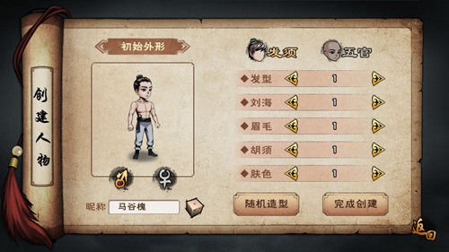
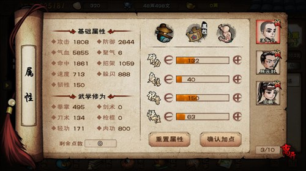
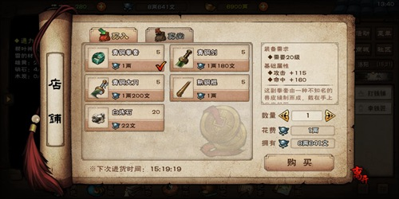

遊戲玩法介紹
一、遊戲地圖
遊戲中有不同風格的地圖，每張地圖都有自己獨特的場景與地勢。



二、戰鬥系統
遊戲中戰鬥系統為回合制，玩家每回合可以進行聚氣，然後可以通過自身聚氣的系統，從而釋放技能。

三、角色養成
玩家創建的角色在創建介面就可以進行命名和進行對外形的塑造。


四、裝備養成
在打鐵鋪中可以進行武器的買賣，也可進行武器與飾品的打造與武器淬鍊。


五、技藝與秘技系統
遊戲中有不同的技藝，有一些技藝會對人物的屬性進行影響，一些技藝可以讓人物獲得素材。

六、經脈系統
經脈可分為十二正經和奇經八脈，即：
十二正經：
手三陽：手少陽，手陽明，手太陽
手三陰：手少陰，手厥陰，手太陰
足三陽：足少陽，足陽明，足太陽
足三陰：足少陰，足厥陰，足太陰
奇經八脈：任脈，督脈
我們內功打通的是十二正經，奇經八脈需要額外書籍。
一般內功打通「少」字經。 進階主要打通「陽」「厥」字經，也打通"少"字經。 上乘主要打通"太"字經，也打通"陽""厥"字經。
七、武功系統
遊戲中有著武功系統，武功系統分為進攻套路、內功、輕功三種，每種武功都有基礎武學、一般武學、進階武學等。
進攻套路主要增加人物的攻擊屬性與招架屬性，進攻套路分別對應著四種武器的套路，分別為拳、棍、刀、劍。

內功主要增加人物的氣血與聚氣速度
輕功主要影響著人物戰鬥時的速度與閃避值，在地圖上也可進行相應的位移，從而到達一些地圖的角落位置。 輕功的等級也可影響人物在地圖上的移動速度。
八、門派系統
人物到達15級就可進行拜師，如今暫時可選的門派有：天刀門、太乙教、泠月宮（僅限女性）、少林寺（僅限男性）
不同門派有其不同的功法。 例如，少林寺的龍爪手、易筋經和一葦渡江術等; 天刀門的天罡刃決、身刃歸一決和風雲步等;
太乙教的太乙三清劍、兩儀玄元功和梯雲縱等; 泠月宮的倚天劍決、影月清心功和青蓮步法等。